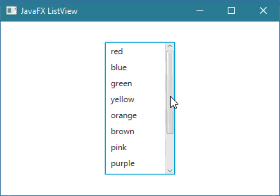
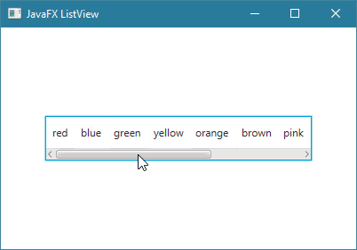
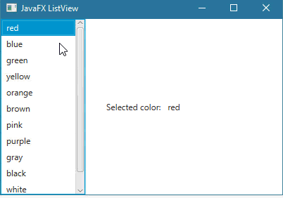
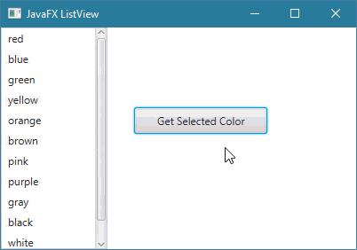
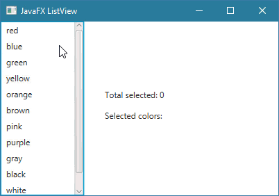
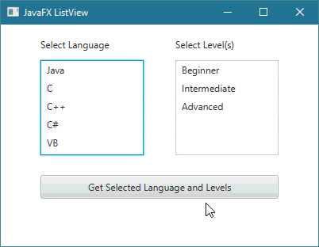
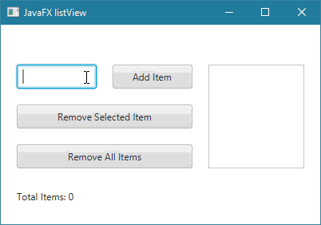
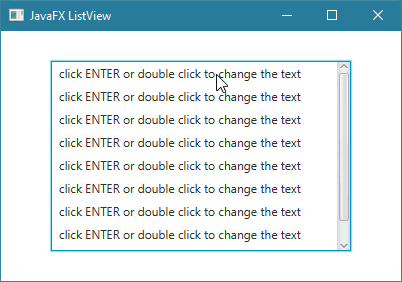
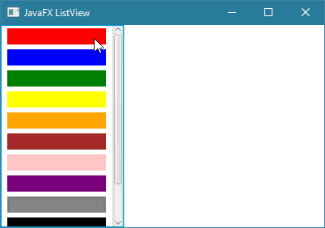

Javafxالكلاس ListView
مقدمة
الكلاس ListView يستخدم لإضافة قائمة ( List ) عامودية أو أفقية في واجهة المستخدم.
بناء الكلاس ListView
@DefaultProperty(value="items")
public class ListView<T>
extends Control
معلومة تقنية
كل كائن ListView تنشئه يتم ربطه بكائن من كلاس إسمه ObservableList.
كائن الـ ObservableList هو الذي تتخزن فيه الخيارات التي تظهر في الـ ListView.
لهذا السبب, سيكون عليك إنشاء كائن من الكلاس ObservableList و تمرر له العناصر التي تريدها أن تظهر في كائن الـ ListView.
بعدها تقوم برط كائن الـ ObservableList بكائن الـ ListView بواسطة الدالة setItems().
لا تقلق ستفهم كل شيء من الأمثلة.
كونستركتورات الكلاس ListView
الجدول التالي يحتوي على كونستركتورات الكلاس ListView.
| الكونستركتور مع تعريفه |
public ListView()
ينشئ كائن من الكلاس ListView يمثل List فارغة عامودية, أي لا تحتوي أي عنصر. |
public ListView(ObservableList<T> items)
ينشئ كائن من الكلاس ListView يمثل List عامودية فيها خيارات جاهزة.
مكان الباراميتر items نمرر كائن من الكلاس ObservableList من أي نوع مثل String, Integer إلخ..
عناصر هذا الكائن هي التي ستظهر كخيارات في القائمة. |
دوال الكلاس ListView
الجدول التالي يحتوي على بعض دوال الكلاس ListView.
| الدالة مع تعريفها |
public final void setTranslateX(double value)
تستخدم لتحديد مكان الـ ListView الذي قام باستدعائها أفقياً.
مكان الباراميتر value نضع رقم يمثل كم Pixel سيتم إزاحته من اليسار إلى اليمين. |
public final void setTranslateY(double value)
تستخدم لتحديد مكان الـ ListView الذي قام باستدعائها عامودياً.
مكان الباراميتر value نضع رقم يمثل كم Pixel سيتم إزاحته من الأعلى إلى الأسفل. |
public void setPrefSize(double prefWidth, double prefHeight)
تستخدم لتحديد حجم كائن الـ ListView الذي قام باستدعائها.
|
public final void setDisable(boolean value)
تستخدم لجعل كائن الـ ListView الذي قام باستدعائها يبدو غير مفعّل, أي يصبح لونه باهتاً و غير قابل للنقر عليه.
مكان الباراميتر value نضع القيمة true لجعله غير مفعّل. |
public final MultipleSelectionModel<T> getSelectionModel()
ترجع كائن من الكلاس MultipleSelectionModel يمثل الخيار أو مجموعة الخيارات التي تم النقر عليها بداخل كائن الـ ListView.
من خلال الكائن الذي ترجعه هذه الدالة يمكنك معرفة قيمة و index كل خيار تم إختياره في الـ ListView, بالإضافة إلى معرفة عدد الخيارات التي تم تحديدها. |
public final void setItems(ObservableList<T> value)
تستخدم لإضافة العناصر ( الخيارات ) لكائن الـ ListView الذي قام باستدعائها.
مكان الباراميتر value نمرر مصفوفة من القيم نوعها مطابق لنوع القيم التي يمكن أن يحتويها كائن الـ ListView. |
public final ObservableList<T> getItems()
ترجع كائن الـ ObservableList المرتبط بكائن الـ ListView الذي قام باستدعائها.
من خلال الكائن الذي ترجعه هذه الدالة يمكنك معرفة عدد الخيارات الموجودة في الـ ListView, إضافة خيار أو أكثر فيه, حذف خيار أو أكثر منه, البحث فيه, فلترة الخيارات التي نريدها أن تظهر إلخ.. |
public final void setEditable(boolean value)
تستخدم لجعل المستخدم قادر على تحديث قيم الكائن الـ ListView الذي قام باستدعائها.
مكان الباراميتر value نضع القيمة true لجعله المستخدم قادر على تحديث القيم بداخله.
ملاحظة: تحتاج أيضاً أن تستدعي دالة إسمها setCellFactory() و التي من خلالها نقوم بتحديد كيف يمكن تحديث القيم. |
public final void setStyle(String value)
تستخدم لتعديل تصميم كائن الـ ListView الذي قام بإستدعائها.
مكان الباراميتر value يمكنك تمرير إسم و قيمة أي خاصية تريد تعديلها في كائن الـ ListView بأسلوب لغة CSS لإظهاره بالشكل الذي تريده. |
أمثلة شاملة
في جميع الأمثلة سنتعامل مع القائمة كالتالي:
سنقوم بتعريف كائن من الكلاس ListView و الذي بدوره يمثل القائمة التي ستظهر في واجهة المستخدم.
سنقوم بتعريف كائن من الكلاس ObservableList و الذي سنستخدمه لتخزين العناصر التي ستظهر في القائمة.
سنقوم بربط كائن الـ ListView بكائن الـ ObservableList بواسطة الدالة setItems().
المثال الأول
المثال التالي يعلمك طريقة إنشاء كائن من الكلاس ListView يحتوي على عناصر.

شاهد المثال »
المثال الثاني
المثال التالي يعلمك عرض عناصر الـ ListView بشكل أفقي, أي ستتعلم كيف تنشئ Horizontal List View.

شاهد المثال »
المثال الثالث
المثال التالي يعلمك طريقة معرفة العنصر الذي قام المستخدم باختياره من ضمن العناصر الموجودة في ListView.
ملاحظة: هنا النتيجة تتغير مباشرةً أثناء إختيار العناصر من القائمة.

شاهد المثال »
المثال الرابع
المثال التالي يعلمك طريقة معرفة العنصر الذي قام المستخدم باختياره من ضمن العناصر الموجودة في ListView عند النقر على Button.

شاهد المثال »
المثال الخامس
المثال التالي يعلمك طريقة جعل المستخدم قادر على إختيار أكثر من عنصر في الـ ListView و عرض إسم و عدد العناصر التي قام باختيارها.
ملاحظة: هنا النتيجة تتغير مباشرةً أثناء إختيار العناصر من القائمة.

شاهد المثال »
المثال السادس
المثال التالي يعلمك طريقة جلب جميع العناصر التي قام المستخدم باختيارها في أكثر من ListView.
ملاحظة: القائمة الأولى يمكن إختيار عنصر واحد منها في كل مرة, القائمة الثانية يمكن اختيار أكثر من قيمة فيها.

شاهد المثال »
المثال السابع
المثال التالي يعلمك طريقة جعل المستخدم يقوم بإضافة أو حذف عناصر في كائن الـ ListView.
بالإضافة إلى إظهار عدد جميع العناصر الموجودة فيه.

شاهد المثال »
المثال الثامن
المثال التالي يعلمك طريقة جعل المستخدم قادر على تعديل نص عناصر الـ ListView.

شاهد المثال »
المثال التاسع
المثال التالي يعلمك طريقة إنشاء ListView لإختيار الألوان.

شاهد المثال »

 محرر الويب
محرر الويب نظام الألوان
نظام الألوان محول الوحدات
محول الوحدات محلل عناوين الشبكات
محلل عناوين الشبكات